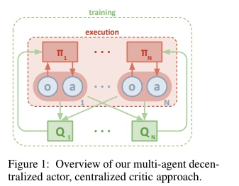
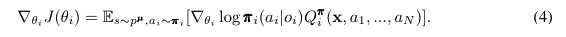
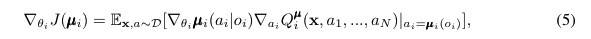
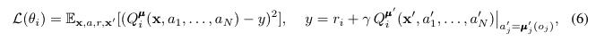
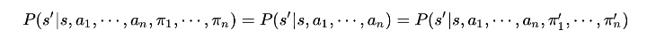
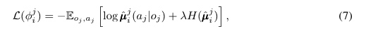
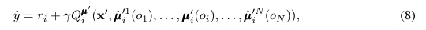
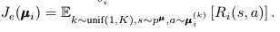
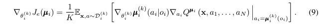

MADDPG
文章全名为《Multi-Agent Actor-Critic for Mixed Cooperative-Competitive Environments》，首先分析了将传统的强化学习算法运用到多智能体领域的挑战：Q-learing算法要求一个稳定的环境，而在多智能体下，环境是不稳定的。而策略梯度的方法则会由于智能体数量的增加，方差（variance）会变得很大。 本文贡献：提出了一个actor-critic的适应性算法。该方法考虑其他智能体的操作策略，能够成功地学习需要复杂多智能体协调的策略。此外，还介绍了一种训练方案，利用针对每个代理的策略集合，从而实现更健壮的多智能体策略。
Introduction
传统RL所面临的一个问题就是每个智能体都在不断学习优化策略，从每个智能体的角度来看，环境是动态变化不稳定的，这不符合传统RL收敛条件。并且在一定程度上，不能通过仅改变智能体自身的策略来适应不稳定的环境。且由于环境的不稳定性，之前应用于DQN的一些经验回放等技巧都无法使用。且PG算法会随着智能体的增加使得本来就很大的方差变得更差。
本文算法的特点： 1、在每次行动时仅仅利用自己的局部信息（观测到的信息） 2、不需要知道环境的动力学模型以及特殊的通信需求 3、不仅可以用于合作环境，也可以用于竞争环境或者混合的环境
Multi-Agent Actor Critic
算法采用集中训练，分布执行。因此，我们允许政策使用额外的信息来缓解训练。

考虑一个游戏具有N个智能体，策略参数为,智能体的策略集合为,智能体的奖励回报为,更新公式为：

上述为随机性策略，换为确定性策略则为：

集中式的动作值函数$Q_i^\mu$更新借鉴了DQN中TD偏差与目标网络的思想：

如上可以看出critic借用了全局信息学习，actor只是用了局部观测信息。MADDPG的一个启发就是，如果我们知道所有的智能体的动作，那么环境就是稳定的，就算策略在不断更新环境也是恒定的。

Inferring Policies of Other Agents
我们用到了其他智能体的策略，这需要不断的通信来获取，但是也可以放宽这个条件，通过对其他智能体的策略进行估计来实现。
每个智能体维护个策略逼近函数，表示第个智能体对第个智能体策略的函数逼近，最小化的损失函数为：

同时，可以被取代为：

Agents with Policy Ensembles
多智能体强化学习一个顽固的问题是由于每个智能体的策略都在更新迭代导致环境针对一个特定的智能体是动态不稳定的。这种情况在竞争任务下尤其重，经常会出现一个智能体针对其竞争对手过拟合出一个强策略。但是这个强策略是非常脆弱的，也是我们希望得到的，因为随着竞争对手策略的更新改变，这个强策略很难去适应新的对手策略。
为了能更好的应对上述情况，MADDPG提出了一种策略集合的思想，第个智能体的策略 由一个具有个子策略的集合构成，在每一个训练episode中只是用一个子策略（简写为 ）。对每一个智能体，最大化其策略集合的整体奖励

并且为每一个的子策略构建一个记忆存储,优化策略集合的整体效果，诊断仪每一个子策略的更新梯度为：
